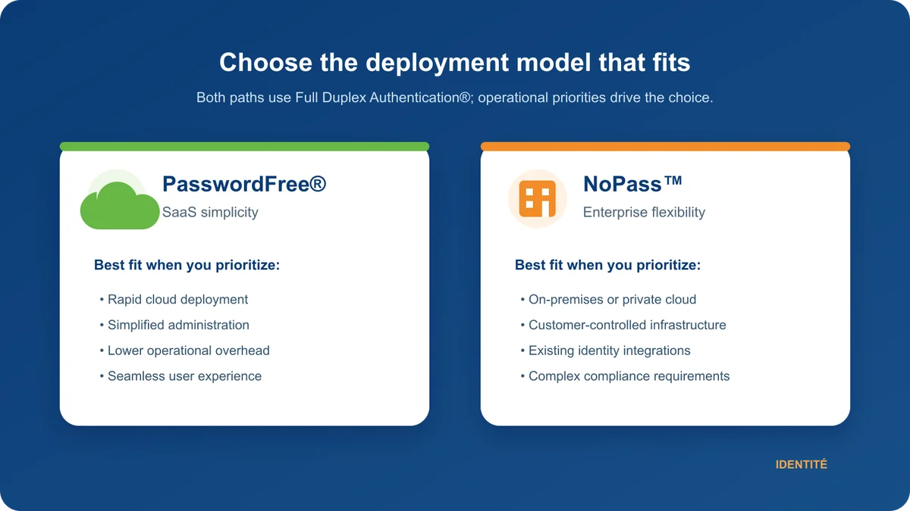
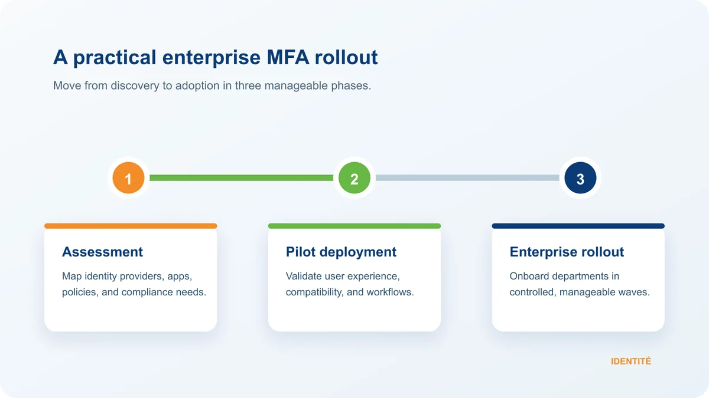

For many organizations, the decision to implement Multi-Factor Authentication (MFA) is no longer a question of if, but when. Cyberattacks continue to target stolen credentials as one of the easiest paths into corporate networks, making strong authentication an essential component of every cybersecurity strategy.
Yet one question consistently arises during planning:
"How long will it take to implement MFA?"
The answer depends on several factors, including the size of your organization, your existing identity infrastructure, regulatory requirements, and the authentication platform you choose.
Fortunately, modern passwordless authentication platforms have dramatically reduced deployment times. Organizations can now implement phishing-resistant authentication without the lengthy projects traditionally associated with enterprise identity management.
Whether you're deploying a cloud-based authentication platform or implementing an enterprise solution integrated with Active Directory and Microsoft Entra ID, choosing the right technology can significantly reduce implementation time while improving both security and user experience.
What Is Full Duplex Authentication® (FDA)?
Full Duplex Authentication® (FDA) is the patented authentication technology that powers PasswordFree® and NoPass™. Rather than layering additional verification steps onto passwords, FDA securely validates both the user and the trusted device through a unified, passwordless authentication process. The result is stronger phishing resistance, fewer user interruptions, simplified identity management, and a significantly better authentication experience.
This patented technology enables organizations to modernize authentication without the complexity commonly associated with traditional MFA deployments.
How Long Does MFA Implementation Really Take?
Every organization is different, but the following estimates reflect typical implementation timelines.
Organization Type | Traditional MFA | Passwordless MFA with FDA |
Individual Users | 5–15 minutes | 2–5 minutes |
Small Businesses | 2–5 days | 1–2 days |
Mid-Sized Organizations | 2–4 weeks | 1–2 weeks |
Large Enterprises | 1–3 months | Phased deployment over several weeks |
The greatest variable isn't the software itself—it's the complexity of the environment being secured.
Organizations with multiple locations, legacy applications, hybrid identity environments, or regulatory requirements naturally require more planning than businesses operating entirely in the cloud.
What Actually Takes Time?
Contrary to popular belief, deploying MFA software is usually the easiest part of the project.
Most implementation time is spent preparing users, policies, and infrastructure.
Typical activities include:
Identity assessment
Application discovery
Authentication policy design
User enrollment
Pilot testing
Employee communication
Administrator training
Help desk preparation
Organizations that rely heavily on passwords often spend additional time configuring password policies, reset procedures, authenticator applications, and recovery workflows.
This is where passwordless authentication begins delivering measurable advantages.
Why Passwordless Authentication Speeds Deployment
Traditional MFA solutions often add another security layer on top of passwords.
While security improves, organizations still inherit the operational burden of password management.
Passwordless authentication removes much of that complexity.
By eliminating password dependency, organizations spend less time managing password resets, account lockouts, forgotten credentials, and authentication recovery.
The result is a faster rollout with fewer support requests and a better experience for employees.
Choosing the Right Platform for Your Organization
Not every organization has the same deployment requirements. Selecting the right authentication platform depends on your infrastructure, operational model, and compliance needs.

PasswordFree® — SaaS Simplicity
Organizations seeking rapid deployment with minimal infrastructure management often choose PasswordFree®, a Software-as-a-Service (SaaS) authentication platform powered by Full Duplex Authentication®.
PasswordFree® is well suited for organizations that want:
Rapid cloud deployment
Simplified administration
Passwordless authentication
Lower operational overhead
Reduced help desk costs
A seamless user experience
Because PasswordFree® is delivered as a SaaS solution, organizations can begin securing users quickly without deploying additional authentication infrastructure.
NoPass™ — Enterprise Flexibility
Larger enterprises often require greater control over authentication infrastructure and integration with existing identity systems.
For these environments, NoPass™ provides a Platform-as-a-Service (PaaS) solution that can be deployed:
On premises
In private cloud environments
In customer-controlled cloud infrastructure
Powered by Full Duplex Authentication®, NoPass™ integrates with enterprise technologies including:
Microsoft Active Directory
Microsoft Entra ID
Microsoft 365 / Office 365
Microsoft Azure
Existing enterprise authentication environments
This flexibility makes NoPass™ particularly attractive for organizations with complex identity architectures or strict security and compliance requirements.
Why Highly Regulated Industries Often Choose NoPass™
Many organizations in highly regulated industries—including financial services, banking, healthcare, government, defense, and critical infrastructure—prefer to maintain direct control over their authentication infrastructure.
For these organizations, on-premises or customer-controlled deployments often align more closely with internal governance, regulatory requirements, and security policies.
Because NoPass™ supports both on-premises and cloud deployments while integrating with existing enterprise identity systems, it provides the flexibility many enterprise security teams require without sacrificing modern passwordless authentication.
A Typical Enterprise Deployment Timeline
Most successful implementations follow a phased approach.

Phase 1: Assessment
IT and security teams evaluate:
Identity providers
Active Directory
Entra ID
Enterprise applications
Authentication policies
Compliance requirements
Existing authentication workflows
Phase 2: Pilot Deployment
A pilot group validates:
User experience
Application compatibility
Policy configuration
Device registration
Administrative workflows
Because FDA eliminates many password-related issues, pilot deployments generally generate fewer support requests than traditional MFA implementations.
Phase 3: Enterprise Rollout
Departments are onboarded in manageable phases.
Whether deploying PasswordFree® or NoPass™, organizations can expand authentication across the enterprise while minimizing disruption and maintaining productivity.
Reducing Help Desk Costs
One of the hidden costs of traditional authentication is password support.
Help desks routinely spend valuable time resolving:
Forgotten passwords
Locked accounts
Password resets
Expired credentials
Authentication recovery
Industry studies consistently show that password-related support represents one of the largest categories of IT service desk requests.
By replacing password-centric authentication with Full Duplex Authentication®, organizations dramatically reduce many of these recurring operational costs.
Improving Employee Productivity
Authentication occurs dozens of times every workday.
Saving even a few seconds during each login translates into hundreds of recovered work hours annually across an organization.
With passwordless authentication powered by FDA, employees benefit from:
Faster sign-ins
Fewer interruptions
Reduced authentication friction
Improved user satisfaction
Stronger security
Security and productivity no longer need to compete.
Security Begins Improving Immediately
The value of MFA isn't measured solely by implementation speed.
It's measured by how quickly an organization reduces risk.
Authentication powered by Full Duplex Authentication® helps organizations defend against:
Credential theft
Phishing attacks
Password spraying
Account takeover
Ransomware
Social engineering attacks targeting passwords
Because passwords are removed from the authentication process, organizations begin strengthening their security posture from the moment users are enrolled.
Best Practices for Faster MFA Deployment
Organizations consistently achieve successful implementations when they:
Begin with a pilot deployment.
Prioritize high-risk users and privileged accounts.
Communicate implementation plans early.
Enable streamlined user enrollment.
Train administrators before enterprise rollout.
Choose passwordless authentication whenever possible.
Integrate with existing identity infrastructure instead of replacing it.
These practices improve both deployment speed and long-term user adoption.
Why Authentication Powered by Full Duplex Authentication® Is Different
Many MFA platforms simply add another verification layer to passwords.
Authentication powered by Full Duplex Authentication® takes a fundamentally different approach.
Rather than treating passwords as the foundation of identity, FDA eliminates password dependency entirely, providing a unified, phishing-resistant authentication experience that is faster, simpler, and more secure.
Whether delivered through PasswordFree® for SaaS deployments or NoPass™ for enterprise and customer-controlled environments, organizations benefit from:
Faster MFA implementation
True passwordless authentication
Reduced help desk costs
Lower administrative overhead
Phishing-resistant security
Improved employee productivity
Better user adoption
Stronger cyber resilience
Final Thoughts
Implementing Multi-Factor Authentication no longer has to be a lengthy or disruptive IT initiative.
Individuals can enable MFA in minutes, while organizations can often complete enterprise deployments in days or weeks, depending on their size, complexity, and regulatory requirements.
The key is selecting an authentication platform that not only accelerates deployment but also reduces long-term operational costs and strengthens security.
Organizations seeking rapid cloud deployment can leverage PasswordFree®, while enterprises requiring Active Directory integration, Microsoft Entra ID connectivity, Microsoft 365 support, Azure integration, or on-premises deployment flexibility can implement NoPass™. Both platforms are powered by Full Duplex Authentication®, providing a unified passwordless authentication experience that improves security while simplifying implementation.
When evaluating MFA solutions, don't simply ask, "How long will implementation take?" Ask a more strategic question:
"Which authentication platform will continue delivering security, operational efficiency, and a superior user experience long after deployment is complete?"
For many organizations, that answer begins with passwordless authentication powered by Full Duplex Authentication®.